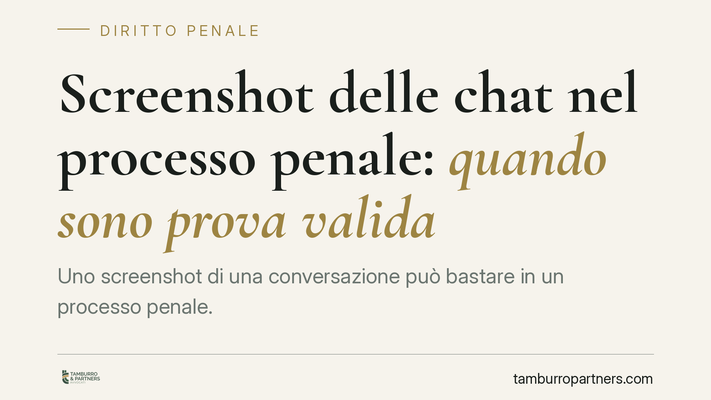

Screenshot delle chat nel processo penale: quando sono prova valida
Uno screenshot di una conversazione può bastare in un processo penale. La Cassazione ha ribadito che le immagini delle chat prodotte da chi ha partecipato al dialogo sono documenti liberamente valutabili dal giudice. Diverso il caso del materiale consegnato da un terzo estraneo, dove entrano in gioco regole più stringenti sul sequestro e sull'integrità del dato informatico.

Il caso e il principio
Nei procedimenti per reati di relazione — su tutti gli atti persecutori ex art. 612-bis c.p. — la prova decisiva è spesso una conversazione via messaggistica. La persona offesa estrae gli screenshot delle chat e li consegna agli inquirenti. Sono utilizzabili?
La giurisprudenza di legittimità è consolidata nel ritenere che gli screenshot prodotti da chi ha partecipato alla conversazione costituiscono prova documentale ai sensi dell'art. 234 c.p.p., liberamente valutabile dal giudice. In questo senso si muove l'orientamento della Corte di Cassazione penale, che distingue nettamente la posizione del partecipante al dialogo da quella del terzo estraneo.
Inquadramento normativo
L'art. 234 c.p.p. consente l'acquisizione di documenti che rappresentano fatti, persone o cose mediante fotografia, cinematografia o altro mezzo. Lo screenshot rientra in questa definizione: è la rappresentazione statica di una schermata.
Il punto delicato è la provenienza del documento.
Quando a produrlo è il partecipante alla conversazione (la presunta vittima che era parte del dialogo), non si pone un problema di tutela della segretezza. L'art. 15 Cost. protegge la libertà e la segretezza della corrispondenza, ma questa tutela riguarda i terzi: chi è parte del dialogo può legittimamente conservarne e riferirne il contenuto. La corrispondenza, una volta ricevuta e non più "in transito", esce dalla sfera di protezione tipica dell'intercettazione, pur restando rilevante il profilo generale della riservatezza.
Diverso il caso del terzo estraneo che detiene il materiale. Qui non è più sufficiente la libera produzione: occorre un atto dell'autorità. Attenzione, però, al riferimento corretto. L'art. 254 c.p.p. disciplina il sequestro di corrispondenza presso chi la detiene *in forza di un servizio* postale, telegrafico o telematico — quindi presso operatori e provider. Non è la norma pertinente quando lo screenshot sta nel telefono di un privato. In quel caso il riferimento è il sequestro probatorio ordinario ex art. 253 c.p.p., eventualmente integrato dalle regole sui dati informatici: acquisizione presso fornitori di servizi (art. 254-bis c.p.p.), perquisizioni e ispezioni di sistemi informatici (art. 247, co. 1-bis, c.p.p.) e attività d'iniziativa della polizia giudiziaria (art. 352, co. 1-bis, c.p.p.).
Documento informatico e rischio di manipolazione
La qualificazione come documento non equivale a prova incontestabile. Lo screenshot è per natura manipolabile: ritaglio, montaggio, modifica del testo o della data sono tecnicamente alla portata di molti.
Per questo la libera valutazione del giudice (art. 192 c.p.p.) ha un peso centrale. Il giudice non è vincolato ad accettare l'immagine così com'è: ne apprezza l'attendibilità alla luce del contesto, degli altri elementi di prova e di eventuali contestazioni della difesa.
Quando il dato va estratto dal dispositivo dell'indagato, il discorso cambia ancora. Qui entrano in gioco le regole della *digital forensics*: copia forense del supporto, calcolo del valore di hash (l'impronta digitale che certifica l'integrità del file) e documentazione della catena di custodia, cioè la tracciabilità di ogni passaggio del reperto. Una gestione non conforme può compromettere l'utilizzabilità o, quantomeno, il valore probatorio del dato.
Resta sullo sfondo l'art. 234-bis c.p.p., sull'acquisizione di documenti e dati informatici conservati all'estero: profilo ulteriore che può emergere quando i contenuti risiedono su server fuori dal territorio nazionale.
Implicazioni pratiche
Per chi denuncia, lo screenshot è uno strumento utile ma non autosufficiente: va reso il più verificabile possibile. Per chi è indagato, la contestazione sull'autenticità e sulla completezza del materiale diventa un terreno difensivo concreto, soprattutto quando mancano garanzie tecniche sull'integrità del dato.
Cosa fare in concreto
- Conserva il dato originale. Non limitarti allo screenshot: mantieni la chat sul dispositivo e, dove possibile, esporta la conversazione completa.
- Documenta il contesto. Numero di telefono, nome del contatto, data e ora devono essere leggibili e coerenti; evita ritagli che isolano singole frasi.
- Non alterare nulla. Qualsiasi modifica, anche in buona fede, espone a contestazioni sull'autenticità.
- Valuta una verifica tecnica. Può essere opportuno considerare l'acquisizione forense del dispositivo, con copia e hash, per blindare l'integrità del materiale.
- Rivolgiti a un difensore prima di produrre il materiale. La modalità di acquisizione incide sull'utilizzabilità: un errore procedurale può indebolire anche una prova sostanzialmente genuina.
---
Contributo informativo a cura di Tamburro & Partners - Avv. Giuseppe Tamburro. Non costituisce parere legale.
Ogni condominio ha una storia a sé.
Se gestisci un'amministrazione e vuoi un confronto su una specifica questione condominiale, scrivi allo studio. Ti rispondiamo entro un giorno lavorativo.